12 关 · 每关主考一种能力
图是模型在每关门口看到的第一人称画面（Blender 渲染，和网页版同一视角）。“程序解”是网页里自带的解法跑出的最快用时，可以当成满分参考。点图片看大图。
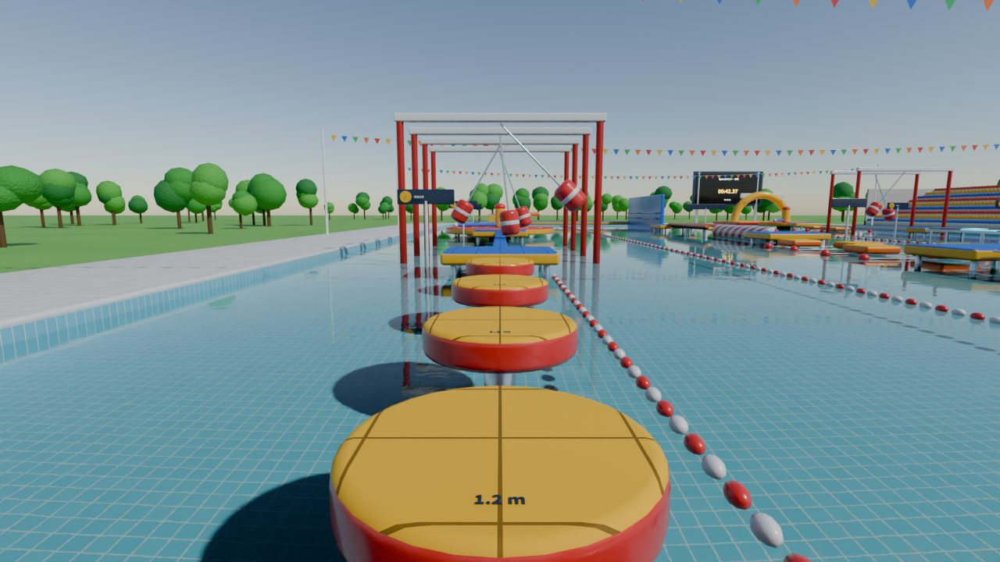
1热身跳台原型
静止圆台，间距 1.2→2.6 米，台面上标了距离。后两个间距要跑起来跳，也是试出自己能跳多远的地方。
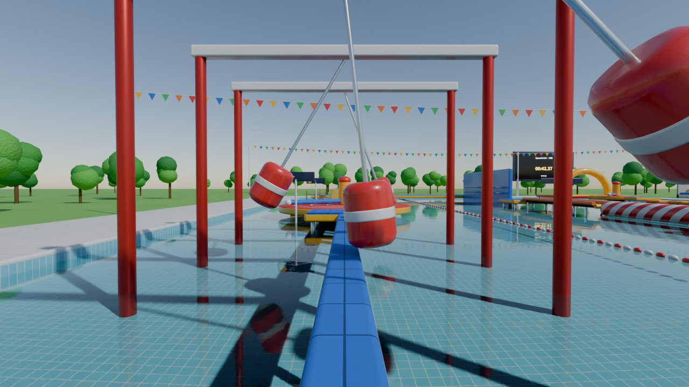
2摆锤走廊原型
4 个摆锤，周期 2.0 / 3.0 / 2.4 / 3.6 秒，相位各不相同。要看出周期，找能连续通过的窗口。
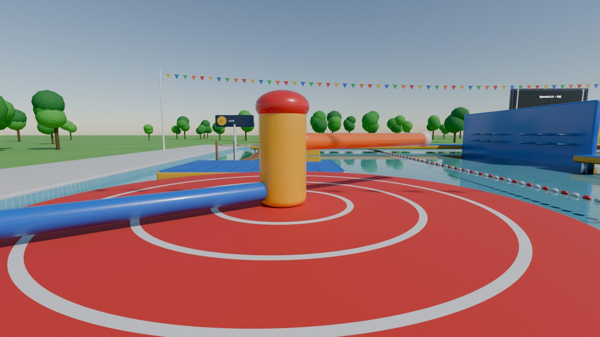
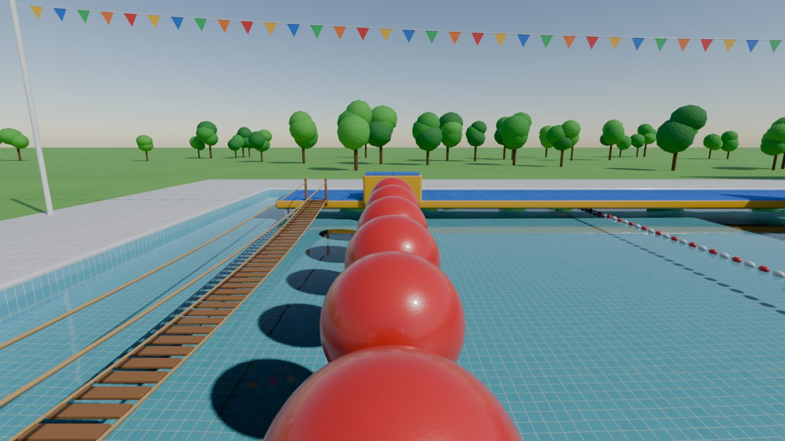
4大红球原型
6 个大球，间距越来越大，落点偏离球顶 0.6 米就会滑下去。最后一跳从球心到台边 4.0 米，超出极限，要在起跳台上看出来，改走旁边的吊桥。
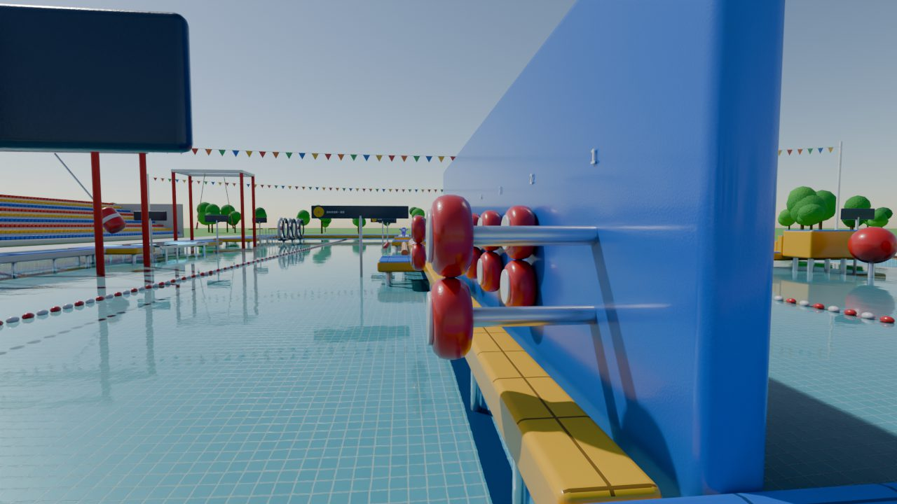
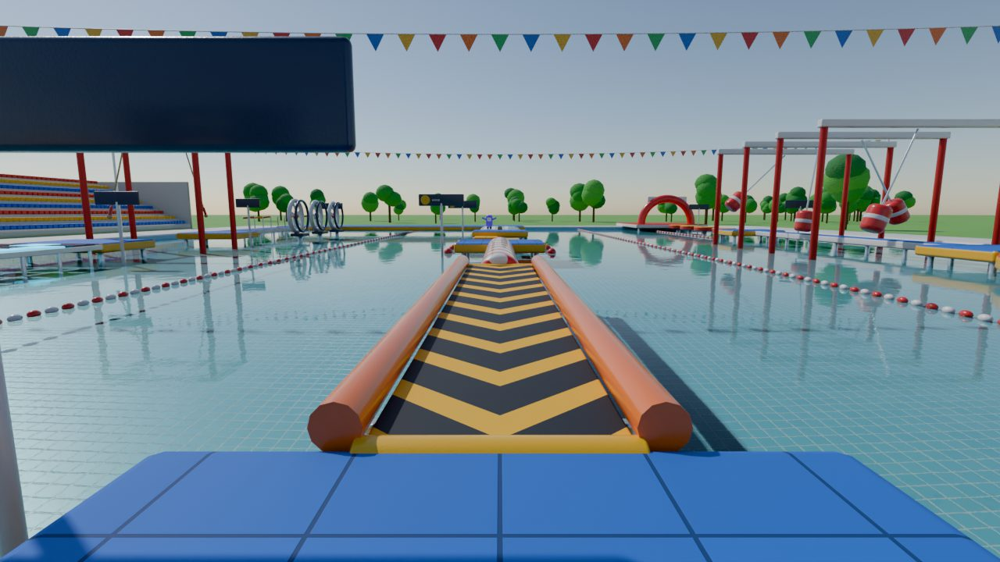
6逆向传送带 + 滚筒
传送带以 2.5 m/s 往回走，走路会被带回去，必须跑；滚筒会把人往右带，要往左压着走。
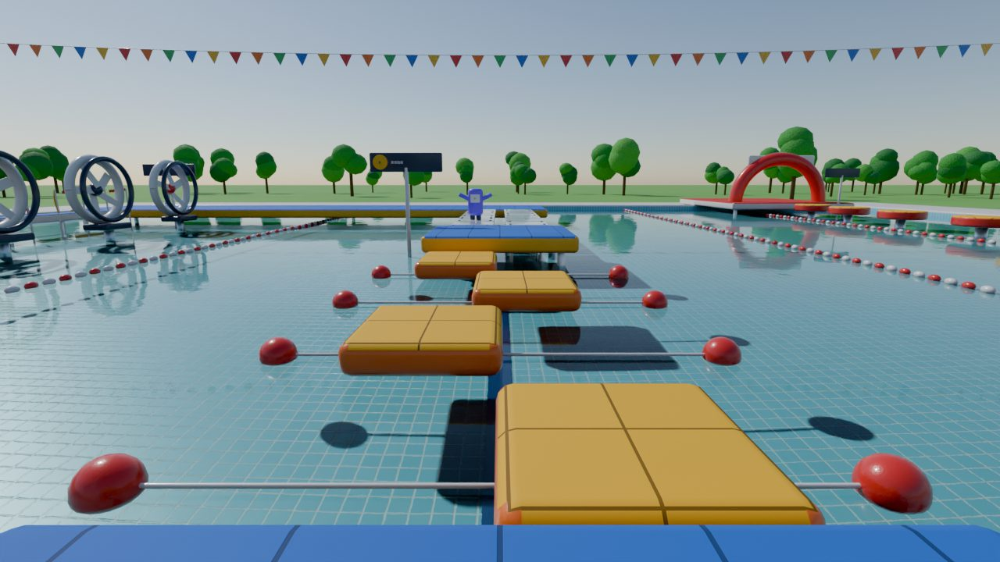
7移动浮板原型
4 块浮板横向往返，周期 5.0 / 6.0 / 4.6 / 5.6 秒。起跳要瞄浮板落地那一刻的位置，而且会带着脚下浮板的速度。
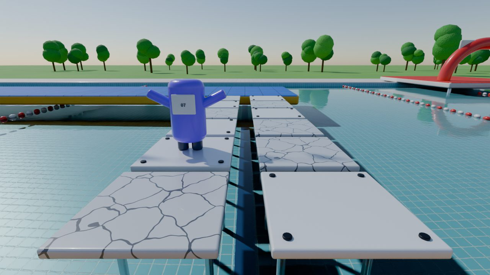
8真假踏板
每排两块，一块会塌，两列之间隔着半米要跳过去。假板有裂纹、颜色略深、没有螺丝；前面的 NPC 会先跳一步。
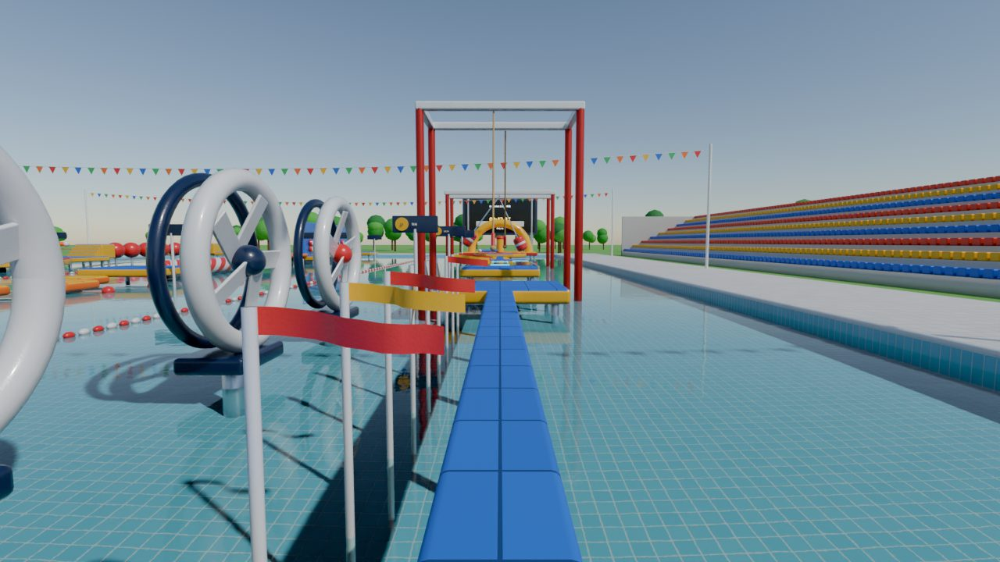
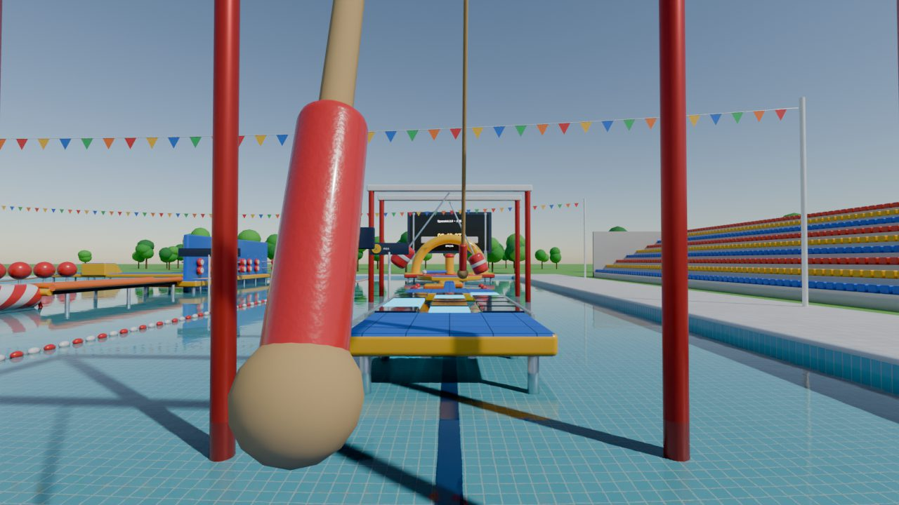
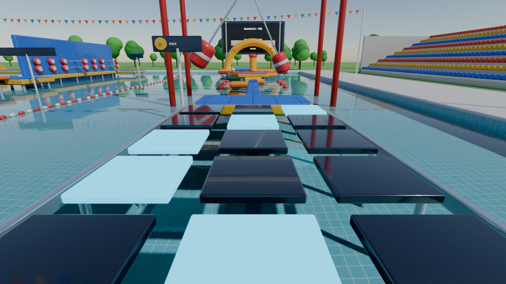
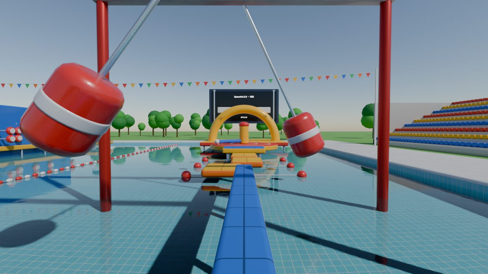
看清运动，需要连拍
单看一帧，分不清锤子正往哪边摆、有多快。AI 动作模式每一步都返回 4 张连拍（间隔 0.25 秒，最后一张就是当前画面），模型要从里面估出周期，再决定什么时候上桥。下面是摆锤走廊的 4 帧，四个锤子周期分别是 2.0 / 3.0 / 2.4 / 3.6 秒。
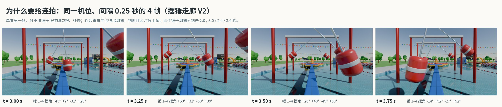
plan）一次给出最多 12 个动作，中途不看画面，连续执行。纯粹考脑内的物理推演：等 1.2 秒、跑 3 米、跳。设计图纸与网页版画面
图纸、Blender 场景和网页版都读同一份布局文件（course/layout.py），障碍位置、周期和机位只写一次。
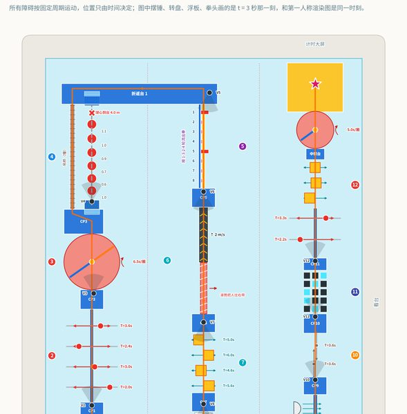
图 1赛道俯视示意图
三条赛道蛇形折返；每个障碍的运动范围和周期、检查点、12 个机位，右侧是每关考的能力。
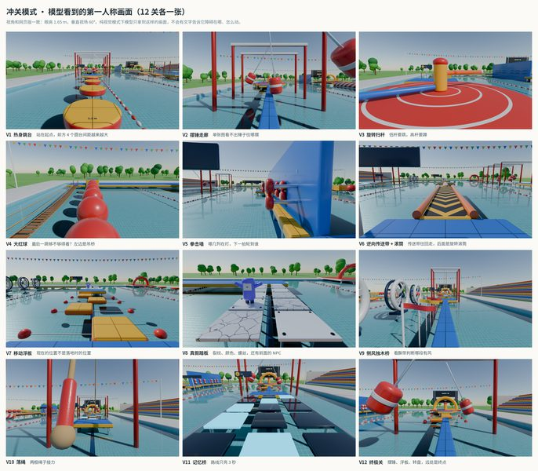
图 212 关第一人称（Blender）
和网页版同样的眼高与视场，所有画面取同一时刻 t = 3 秒。
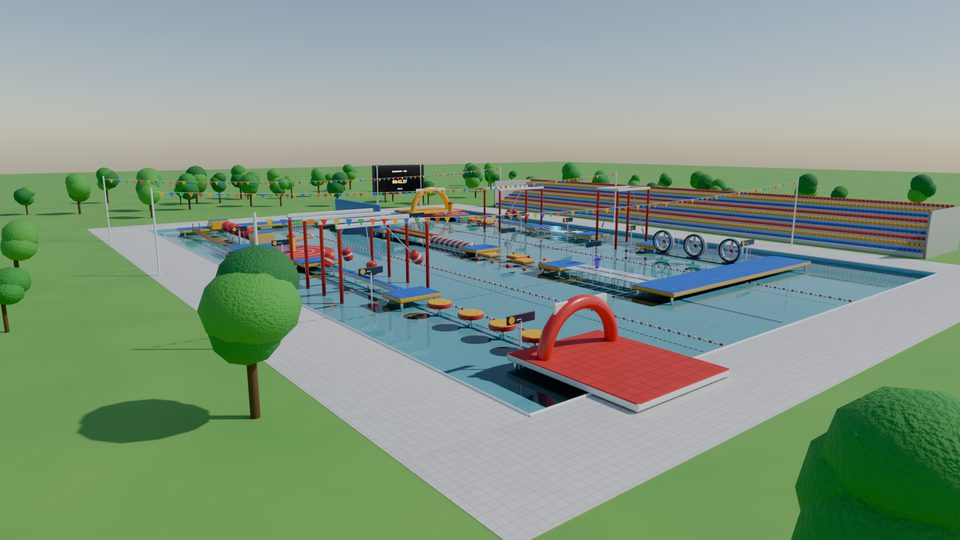
图 3斜侧视角（Blender）
红黄蓝充气障碍、泳池、看台和计时大屏，参考节目的样子。
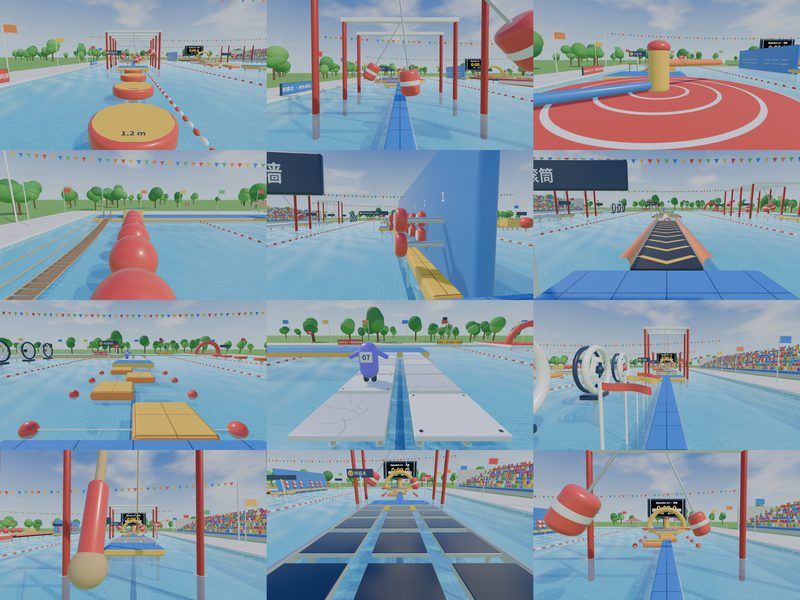
图 4网页版画面
浏览器里实时渲染的同 12 个机位：三维场景、阴影、水面反射，没有用任何预渲染图。
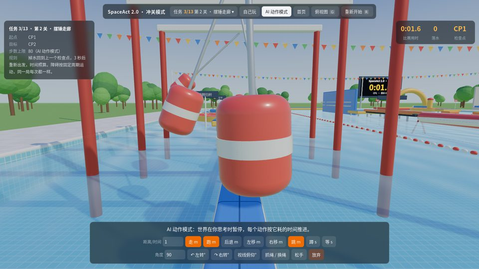
图 5AI 动作模式界面
世界在思考时暂停；按距离、秒数或角度下动作，执行完回放给你看。
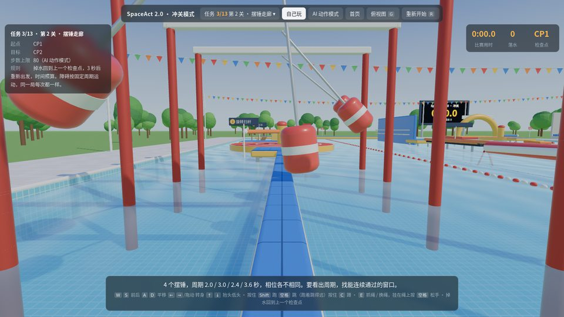
图 6自己玩
键盘实时操作，右上角是比赛用时、落水次数和检查点。
AI 怎么闯关
动作
wait原地等待 0.05–20 秒walk朝前走，按平地 1.6 m/s 计时（传送带、滚筒、吊桥上实际位移不同）run朝前跑，按平地 4.0 m/s 计时back后退，1.6 m/ssidestep平移，正数向左、负数向右，1.6 m/sturn原地转身，正数向左、负数向右，耗时 0.1 秒jump向正前方跳，0–3.2 米（按落在同一高度算），起跳时带着脚下平台的速度duck原地蹲下，身高从 1.75 米降到 1.0 米grab伸手抓绳；挂在绳上时换到另一根够得着的绳release松开绳子look把视线俯仰调到指定角度（-60 到 30，负数低头），不耗时plan一次给出最多 12 个动作，中途不看画面，连续执行give_up放弃本局
观察、得分和接口
- 画面：768×432 第一人称，眼高 1.65 米，垂直视场 60°；每步 4 张连拍。
- 文字：纯视觉模式下只说身体发生了什么，比如“被撞飞了，掉进了水里，回到了上一个检查点”，不会说障碍在哪、怎么动；图文模式会多给当前是第几关。
- 身体：走 1.6 m/s，跑 4.0 m/s，最远跳 3.2 米，起跳高度 0.8 米，蹲下后身高 1.0 米。这些写在任务卡里，也可以不告诉模型，让它在热身跳台自己试。
- 掉水：回到上一个检查点，3 秒后重新出发，时间照算，不直接判负，这样才能看出它会不会从失败里学习。
- 每关单独算：每关自己的步数上限、用时、落水和得分。步数上限 = 进入这一关那一刻程序解的步数 × 3 + 10（默认这一局单关 19–85 步，12 关合计 492 步），时间上限 300 秒。全程任务里某关用完就判这关失败、跳到下一关起点继续，总分是 12 关得分的平均。
- 每关得分：程序解从同一状态（同一位置、同一时刻）出发的用时 ÷ 实际用时，没过记 0。
- 挑战模式：每局随机周期、相位、出拳顺序、假板、记忆路线、风机开关；大红球最后一跳（球心到落地台）在 3.0 米和 4.0 米之间随机，一半的局根本跳不过去。
from web_env import WebEnv
env = WebEnv("course", "s2", obs_mode="vision_only")
obs = env.reset() # obs["frames_png"]：4 张连拍
obs, done, info = env.step(("run", 5.6))
obs, done, info = env.step(("jump", 2.4))公平、可复现、堵住捷径
参考
游戏《糖豆人》（Fall Guys，2020）：周期障碍、转盘扫杆和真假门的关卡语言
评测VideoGameBench（2025）发现模型实时玩游戏几乎过不了关，于是另做了暂停版；PHYRE、Physion、CLEVRER 等物理推理基准都是旁观答题，模型不用亲自上场
文件web/course.html · web/course.js（物理、程序解、渲染、AI 接口）· course/layout.py（唯一的布局数据）· bench/web_env.py（Python 接口）